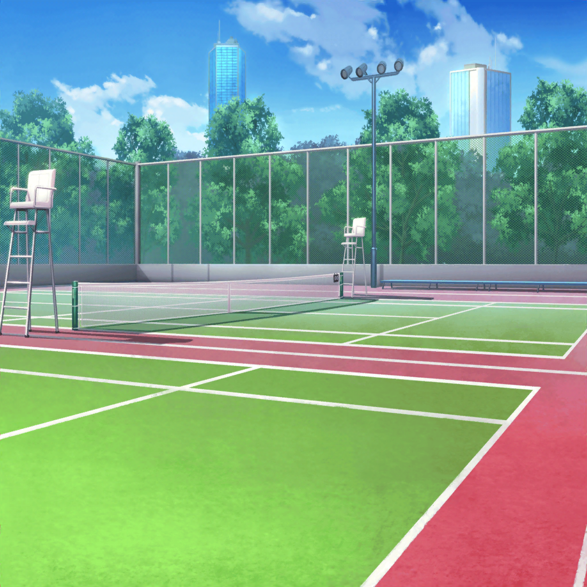

花咲川女子学園 中庭
たえ
千聖先輩が手伝ってくれたおかげで、
中庭で何羽か捕まえられてよかったね。
これで残りは……１７羽、かな？
たえ
これで中庭のうさぎハントは完了
有咲
うさぎハントっていうと楽しい感じするけど、
実際はすげー走って疲れた……
千聖
ふふ、本当にふたりは仲よしね
有咲
別に仲よしじゃ……
え、えっと、あとはテニスコートと体育館だっけ
千聖
中庭からだとテニスコートの方が近いわね。
そのあたりでうさぎを見た人がいないか、
誰かに聞いてみましょうか

花咲川女子学園 テニスコート
？？？
ふええ〜！？
有咲
ん？ なんの声？
花音
待ってぇ～！
千聖
これ……花音の声だわ
たえ
もしかしたら、うさぎを追いかけてるのかも
有咲
花音先輩！
花音
ボール、ボールがあ〜！！ 待って～……！
たえ
追いかけてるのは、テニスボール？
花音
待って～……きゃあっ！？
たえ
花音先輩、大丈夫ですか？
花音
うぅ、すみません……って、たえちゃん！？
有咲ちゃんと千聖ちゃんまで……
こんなところで何してるんですか？
千聖
ちょっと、色々とね。
花音こそ、テニス部でもないのに何をしてるの？
花音
多分、テニス部の人たちが片付け忘れたボールが
落ちていたから拾っておこうと思ったんだけど……
花音
拾うたびに腕からボールがこぼれていっちゃって……
千聖
……花音、らしいわね……
花音
ご、ごめんなさい……
たえ
ボールのかわりに、うさぎを捕まえてみませんか？
花音
ふぇえっ！？ ど、どういうこと？
千聖
実は、中等部で飼育しているうさぎが逃げてしまったみたいで、
私達は逃げたうさぎを探してるの。
このあたりで見かけなかった？
花音
あっ、そういえば見たかも……！
どうしてこんなところにいるんだろうって思ってたんだけど、
逃げちゃったんだね
花音
で、でも私、役に立てるかな……
千聖
大丈夫。花音は無理につかまえなくても、
見つけてくれるだけでいいわ。そうすれば……
千聖
この２人が捕まえてくれるから♪
たえ・有咲
任せてください！
ええっ！？
有咲
ちょ、ちょっと白鷺先輩、何を……！
千聖
あ、噂をすれば、あそこに５羽いたわ！
たえちゃん、有咲ちゃん！ よろしくね！
有咲
はあ……しょうがねーな……
おたえ、追いかけようっ！
たえ
でも、うさぎを追いかけるなんて、
穴に落ちちゃいそうだね
有咲
穴？
たえ
不思議の国に迷い込んだりして♪
花音
あっ、不思議の国のアリスだね！
有咲
……のんきなこと言ってんな〜……
たえ
千聖先輩は、ハートの女王様かな
千聖
私が？ ふふ、どうしてかしら
有咲
おたえ切り込むなあ……
たえ
んーとそれは……
有咲
そ、それより花音先輩はなんだろうな！？
たえ
花音先輩は白ウサギかな。わたわたしてるから
花音
え、えへへ……わたわた……そうだよね……
有咲
……なあ、おたえ、私は……
千聖
有咲ちゃんはアリスかしら
有咲
……え！
たえ
不思議の国の有咲だね
有咲
は！？
花音
アリサ・イン・ワンダーランド……！
ふふ、語感がぴったりだね？
たえ
うん、かわいい
有咲
かわいくねーし！
花音
えへへ、お話してたらお茶が飲みたくなってきちゃいました♪
千聖ちゃん、ティーパーティーしたいね
千聖
ふふ、それもいいけど
みんな、目的を忘れていない？
有咲
白鷺先輩がいてよかった……
とにかく散らばったうさぎ、つかまえねーと！
たえ
有咲、やる気だ
有咲
う、うるせー！